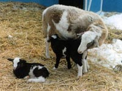
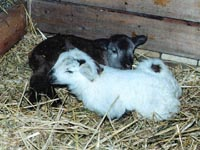
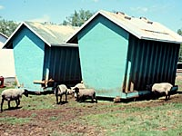

Breeding
Sheep are seasonal breeding animals, meaning their breeding behavior is dependent on the length of daylight. Sheep are normally bred in the fall, and are pregnant for 145 - 150 days. Lambing occurs between January and April, preferably late enough that warmer weather would not require newborn lambs to be housed in doors. Newborn lambs are small in size and easily become cold. A dry warm environment is a necessity to ensure their survival. Some producers will manage their breeding program so that lambs are born earlier in the season to provide animals for the Easter market. These types of systems will require additional care to be provided for the lambs and often more expensive housing for the breeding flock.
The seasonal breeding behavior of sheep can be of benefit to intensively managed flocks. If sheep are housed in doors, their exposure to light can be controlled by the producer, and sheep can be tricked into breeding earlier in the year. The increased frequency of lambing improves the flocks productivity, but requires strong management skills. Proper nutrition, access to fresh water and a clean, disease-free environment become increasingly important in this type of operation.
|

Development
Sheep producers concentrate their efforts on maintaining a flock which has a high multiple birth rate, low mortality and the efficient growth of young animals. Sheep are know to have twins or triplets year after year. The image at the left shows two-day-old Katahdin sheep twins. With so many young, hungry lambs to care for, a mother may not be able to provide enough milk or attention for them to grow quickly. If this occurs, a producer may be required to foster a lamb to another ewe who has fewer lambs or had a lamb that has died. If the foster mother refuses to care for the new lamb, it may have to be bottle fed. Normally ewes are good mothers, and even attempt to steal other lambs.
The majority of ram lambs that are not to be used for breeding will be castrated. In addition to castration, young lambs have their tail docked. Cutting the tail shorter helps to keep animals cleaner and reduces the amount of manure which sticks to their fleece. Both these actions cause some stress for the lamb. It is recommended that castration and tail docking be done by 2 - 3 weeks of age to minimize the severity of stress. Lambs should not be weaned within a week of castration or docking, and are normally weaned when they are 6 - 8 weeks of age.
Shearing the sheep's wool is normally done in early summer. It is a very labour intensive process, but it helps to keep the animals cool during the summer. Shearing in early summer also provides enough time for the sheep to grow back enough wool for warmth by the winter.

Nutrition
Proper nutrition is the one of the most important concerns in any livestock operation. Sheep are ruminants (like cattle). Their specialized digestive system allows them to make use of many of the nutrients in grasses and other forages which are unusable by monogastric animals (pigs, chickens and people). Sheep can often be found grazing on pasture, alone or with other livestock. However, the nutritional quality of pasture is variable, and seldom provides sufficient nutrients in the proper proportions to meet the requirements of sheep at all times. Sheep are can have their diet supplemented with concentrates (mixtures of grains, oilseeds and legumes). Sheep will require extra supplementation while they are in the later stages of gestation while the lamb is growing the most, and during lactation. The synthesis of milk for the newborn lamb demands a lot of addition nutrients. Without supplemental feeding, ewes will become thin and will stop milking. Being excessively thin, may also reduce the ewes ability to become pregnant again the following season. Not only mature sheep are provided with special feeds, but so are the lambs. Prior to weaning, lambs are provided with creep feed. This is normally a mixture of good quality hay, protein supplement, vitamins and minerals. Making creep feed available prior to weaning allows the lambs to become accustom to chewing hay and helps with the development of their rumen.
|